Live threads
The Workspace lists watched sessions from your terminals and driven threads that agent-monitor starts. Threads group as Needs you, Working, Ready and Settled.
A Go daemon, a web app and an iPhone app
agent-monitor watches and drives Claude Code, Codex, Cursor, opencode and ACP agents. It shows every session in one place and lets you answer their permission prompts from any device.

The problem
Each agent keeps its own transcript in its own format. No single view shows them together.
An agent asks for permission and stops. If you do not look at that terminal, it stays idle.
When you leave, you cannot check progress or unblock an agent. The work stops until you return.
Features
The Workspace lists watched sessions from your terminals and driven threads that agent-monitor starts. Threads group as Needs you, Working, Ready and Settled.
Each running thread shows what the agent does now. The step trail folds the tool calls of a turn into one short row that you can open.
An alert arrives when a thread needs you, finishes or fails. An unanswered alert comes again once after a delay that you set. Open alerts return after a daemon restart.
Permission prompts, questions and plan approvals show in the web app, on the iPhone and in the terminal. Answer in one place and the card closes in the others. Each request has a risk level and a reason.
When one Always rule covers several waiting requests, one button allows all of them. The list shows before anything is sent.
agent-monitor suggests rules from the requests you approve. A rule is only as wide as the call you saw. Deny rules win over allow rules.
Work through waiting requests in a queue. Stop a running thread from your pocket.
Read what an agent changed before you approve the next step.
Keep the answers that you send often. Send one with a tap.
A full-text index covers prompts, replies, commands, tool output and errors. Filter by agent, repo, tool and time. Agents can search the same history through MCP.
Driven threads get checkpoints, a diff between any two points, restore, commit, push and draft PRs. A read-only review child can check the diff.
Type into the tmux pane of a watched session, or open a shell in the thread folder. Remote shells stay off until you turn them on and pair a device.
Agents list each other, read panes and send messages through MCP tools. You see an Allow or Deny banner first.
Set a limit per thread and per day. You get a notice at 80%. At 100% the running driven threads stop.
Save a New thread form as a template with variables. Run it on a cron schedule inside the daemon. No cron entry is made.
How it works
An agent in a terminal needs permission to run a command or edit a file.
agent-monitor receives the request through hooks, panes and MCP, and adds a risk level.
The request shows on your phone and in the web app. Tap Allow or Deny.
agent-monitor types your answer into the terminal. The agent goes on with its work.
The daemon runs on your Mac and listens on loopback. You can add a second address, for example a Tailscale address, to reach it from your phone.
Install
# build the daemon
$ go build -o agent-monitor ./cmd/agent-monitor
# add hooks and MCP entries for Claude Code and Codex
$ ./agent-monitor install
# start the daemon on http://localhost:7777
$ ./agent-monitor
# required native helper, next to the binary
$ rust/am-helper/build.sh ~/agent-monitorThe helper am-helper is required. The Go binary exits with an error when it is missing. The web app is already built and embedded. Full options are in the README.